Primary Document from D:/documentsA/uprojects/Adam/Components.html
D:/documentsA/uprojects/Adam/Components.html
JST Style connector 1.5mm pitch. from WaveShare ESP32-S3 board.
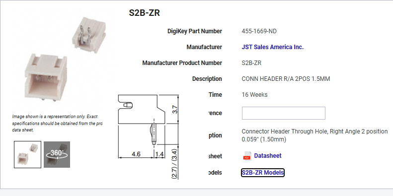
B2B-ZR .
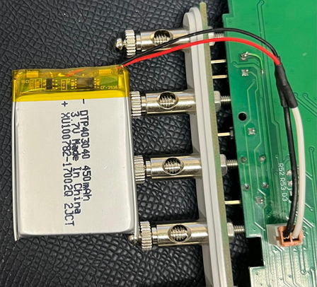
Battery Protection Circuit Module (PCM) for 1S Li-ion battery.

TCR2EF18,LMCT - 1.8V LDO Voltage Regulator.
BQ25100YFPR Battery Charging
Image from wiki.seeedstudio.com/XIAO_BLE
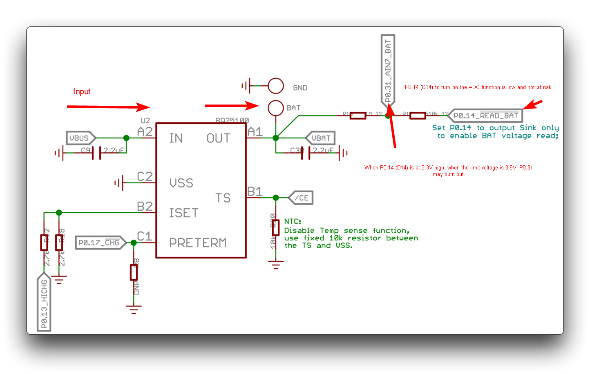
Another Battery Charging IC MCP73831T-2ACI/OT
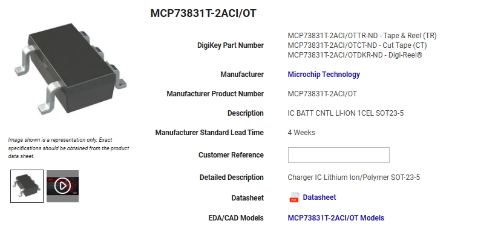
TLV75533PDBVR
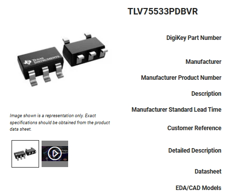
BL4054 Chinese LDO. Reference came from kicad_mac\projects\ESP32-S3-DevKit-LiPo\HARDWARE\ESP32-S3-DevKit-LiPo_Rev_B
BL4054

MAX30102 CKT from Chinese Journal of Medical Instrumentation
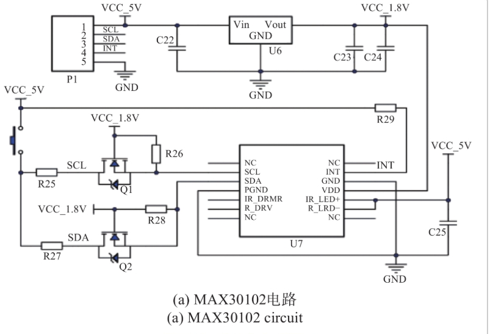
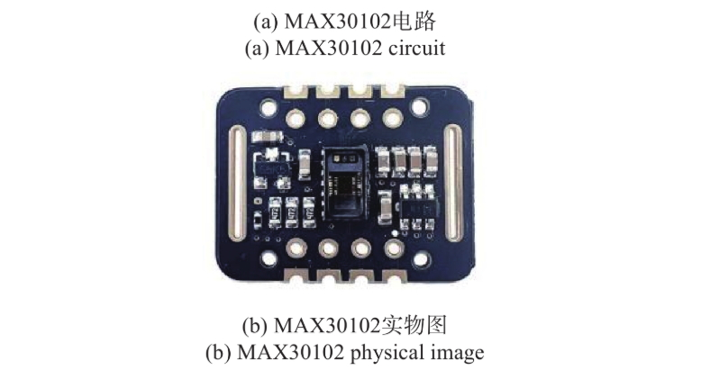
I2C Level Shifter
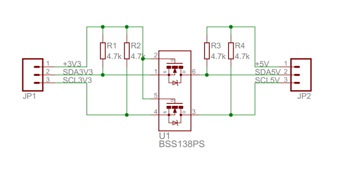
Reference Incomplete Design STM32WB DRV8424 XBEE LM2596 BUCK
D:\kicad_mac\projects\Ron Tiso\Primary01\Primary02.pro:
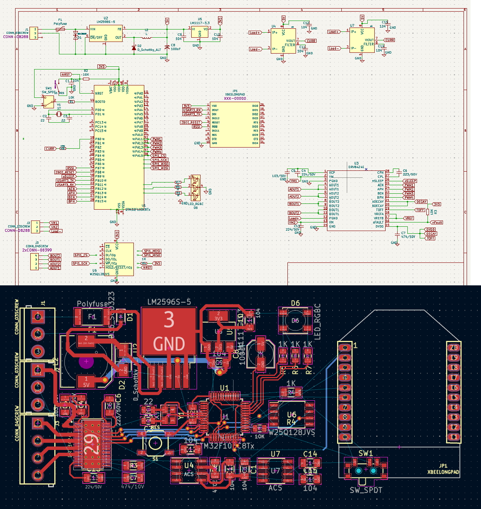
Reference ESP32_C3 Schematic from ESP32-C3_1.54inch_E-ink
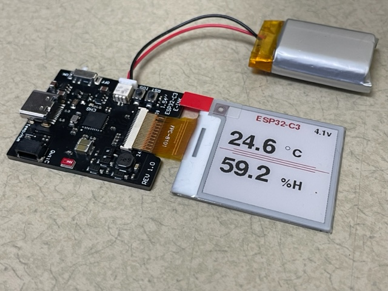

Which GPIOs SHOULD you use?
For your wristband, you have a limited number of safe pins. Here are the available ones on the ESP32-C3:
- Safe for any use: GPIO 0, 1, 2, 3, 4, 5, 6, 7, 8, 10, 20, 21.
- GPIO 9: This is the Boot Pin. It must be HIGH to boot normally and LOW to enter programming mode. You can use it as an input (like a button), but be careful not to hold it LOW during a reset.
- GPIO 18 & 19: These are used for USB D- and D+. If you are using the USB port for charging and programming, avoid using these for other things.
- GPIO 20 & 21: Often used for UART (RX/TX) but can be used as general GPIOs.
Summary for your BOM:
Since you have a lot of sensors (BNO055, MAX30009, MAX30102), you will likely use I2C.
From Espressif ESP32-C3 Documentation
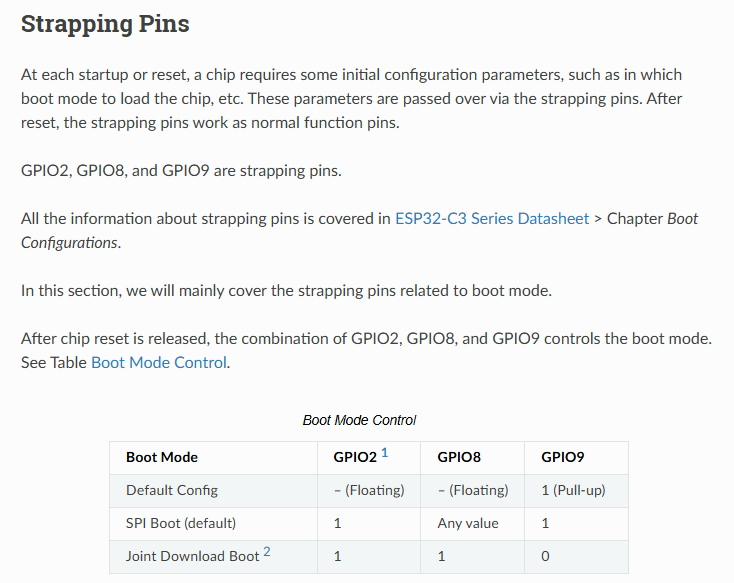
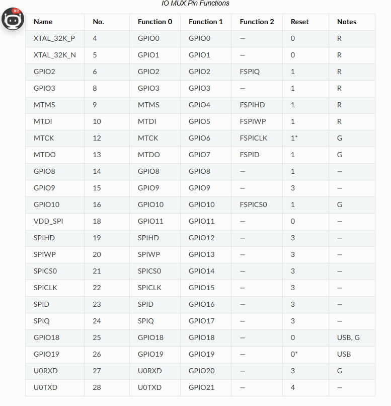
These are the default hardware pins for the user-accessible SPI bus.
ESP32-C3FH4 I2C Pins
The ESP32-C3FH4 uses the same I2C peripheral as the ESP32-C3. It supports flexible GPIO matrix routing, meaning almost any GPIO pin can be assigned to I2C — there are no fixed dedicated I2C pins.
Default / Commonly Used Pins
| Function | Default GPIO Pins | Notes |
|---|---|---|
| I2C SDA (Data Line) | GPIO 8 | Commonly used for I2C data. Can be reassigned to any other GPIO. |
| I2C SCL (Clock Line) | GPIO 9 | Commonly used for I2C clock. Can be reassigned to any other GPIO. |
But GPIO 9 is the Boot Pin. It must be HIGH to boot normally and LOW to enter programming mode. Also keep a pullup on GPIO 8.
Here is a working version using a C3 module
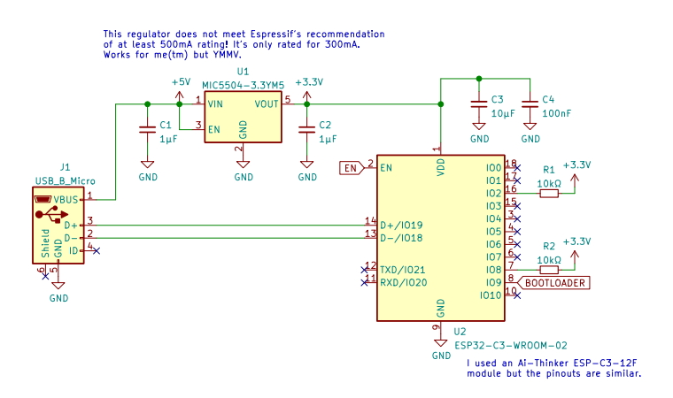
Wristband Schematic Version 1.2
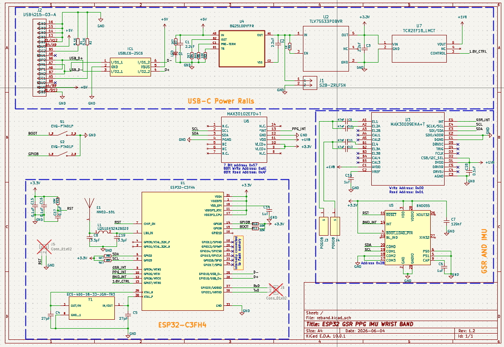